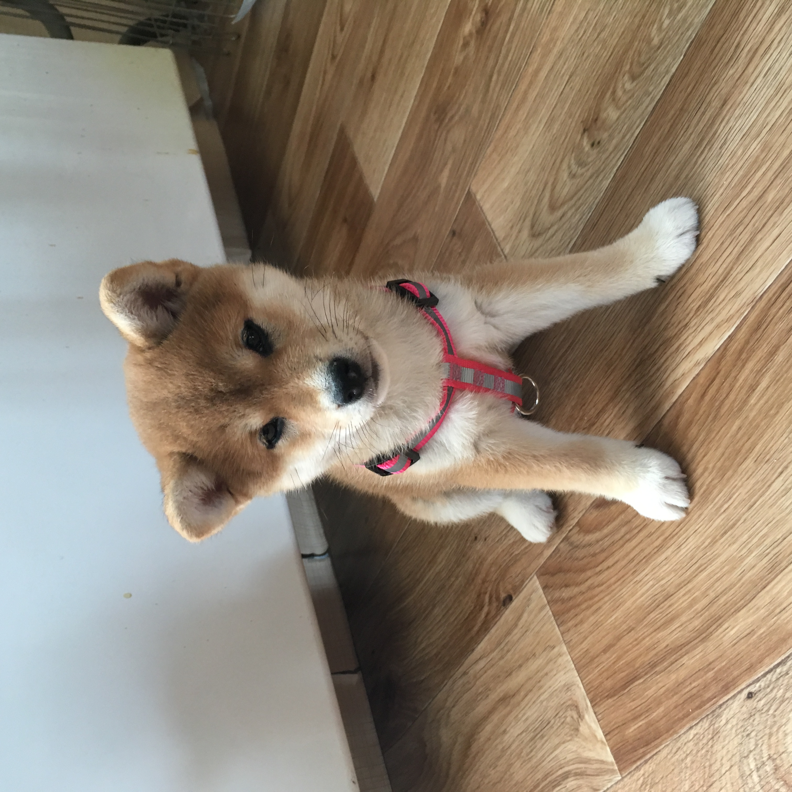
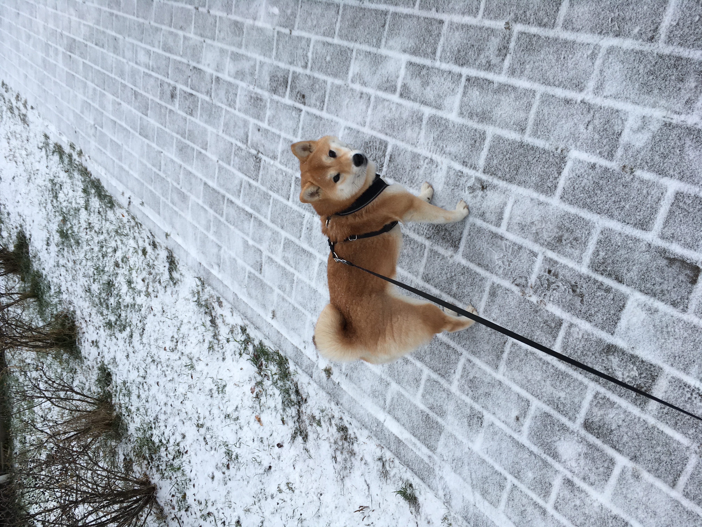
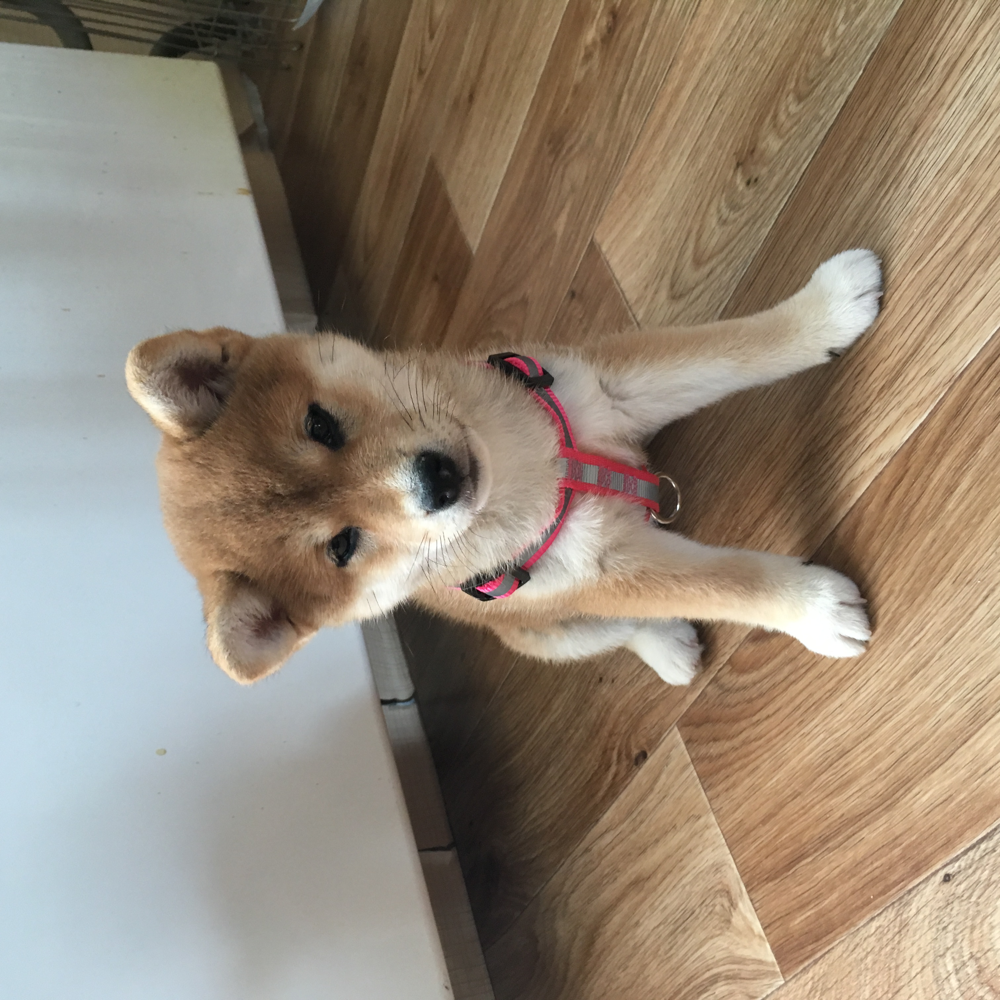
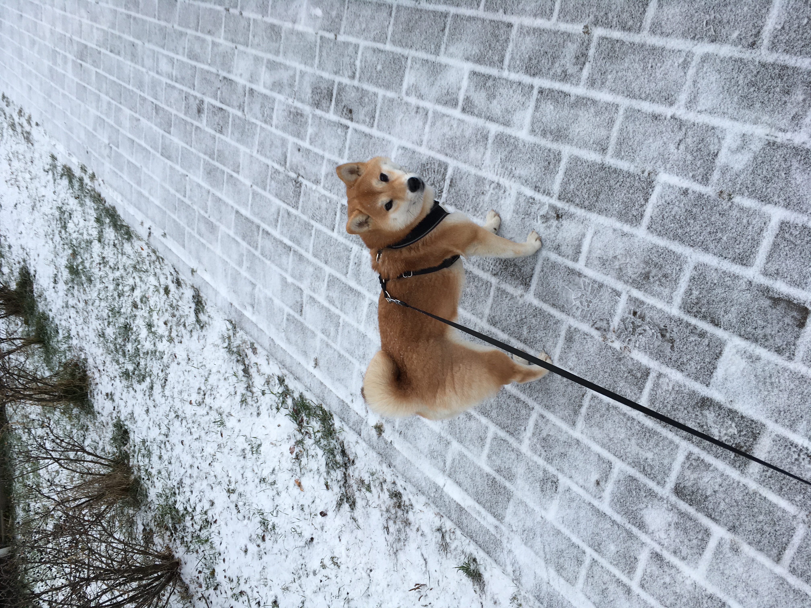

Например, они умеют улыбаться)

Когда Мицу только появилась у нас, она выглядела так:

Сейчас она выглядит так:

Собаку зовут Мицу. Порода: сиба ину. Это порода получила широкую известность благодаря своей мимике.
Например, они умеют улыбаться)
Когда Мицу только появилась у нас, она выглядела так:

Сейчас она выглядит так:
